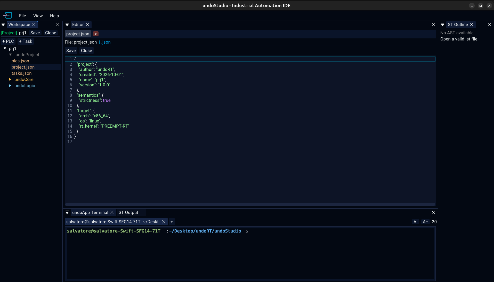
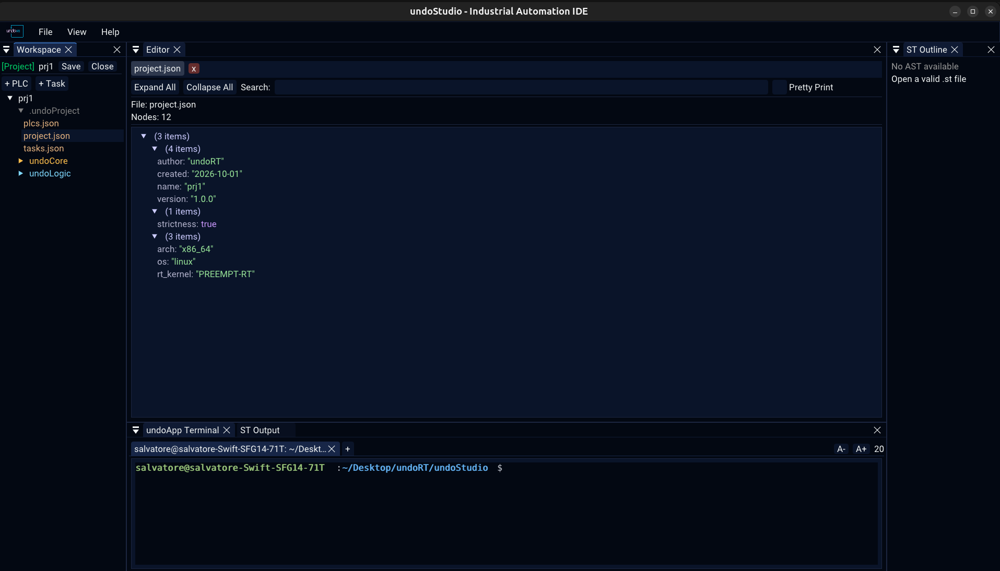

|
undoStudio
The IDE of the undoRT ecosystem
|
|
undoStudio
The IDE of the undoRT ecosystem
|
A .json file gets one of two backends: text, which you can edit, or the tree viewer, which you can only look at. Which one it gets is the file's role, not its extension.


A project's own configuration is JSON and would go to the viewer by extension, and the viewer draws a tree and has nothing to type into. Those are the files the user is told to edit by hand — exports.json holds the PROGRAM order, a task file its cycle time — so they open as text.
Every other .json gets the tree.
Outside a project there are no configuration files, so a .json there is a tree.
Right-click any .json in the Workspace tree:
Both replace the tab rather than adding a second one. One file is one row in the tab bar, and the row is whichever view it is in.
Read-only, and it says so rather than pretending otherwise.
| Expand All / Collapse All | open or close every node |
| Search | keep only the nodes whose key or value matches |
| Pretty Print | the file re-serialised with two-space indentation, instead of the tree |
| Hover a value | its full text as a tooltip, so a long value can be read |
| Header | the file name and the number of nodes |
There is no Open File button in the viewer. Files are opened from the Workspace tree, and EditorApp::openFile is what puts one in a tab.
All JSON, no TOML, and nothing reads or migrates the old format:
| File | What it holds |
|---|---|
.undoProject/project.json | the project's name, version, author and creation date; the target architecture, OS and kernel; and the semantics settings |
.undoProject/plcs.json | the PLCs in the project |
.undoProject/tasks.json | the task list |
undoCore/tasks/<name>.json | one task: its PLC, cycle, priority and CPU |
undoLogic/<plc>/exports.json | the PROGRAM order of one PLC |
strictness under semantics is a boolean rather than the "on" / "off" string it was before, and a project written before that key existed reads as strict, which is what a new project is written with.